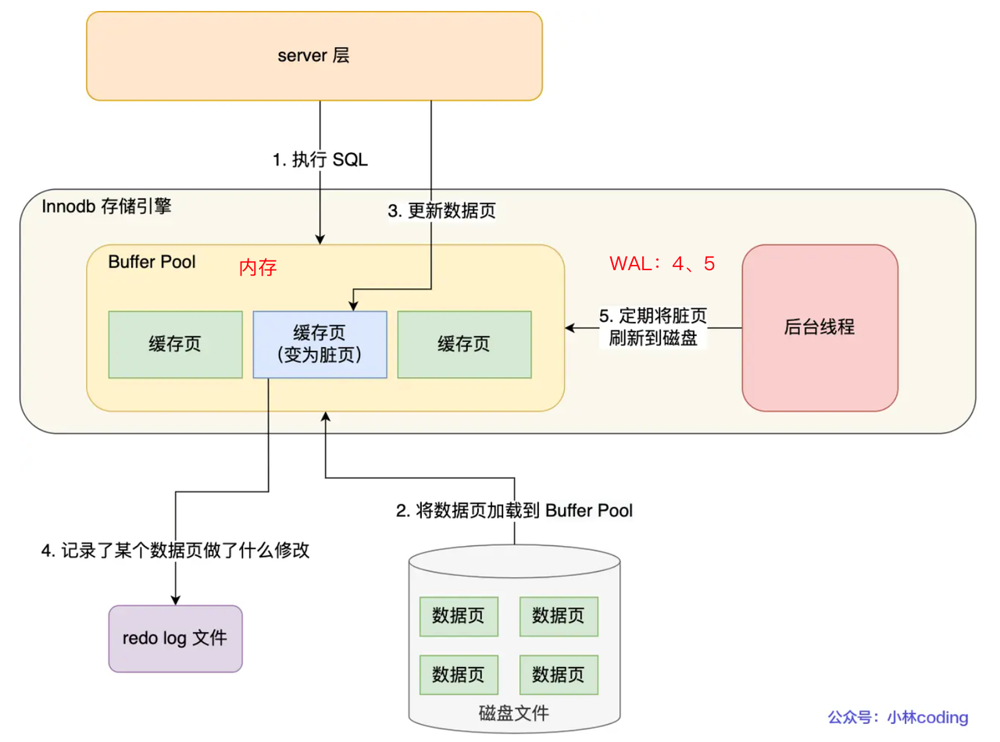
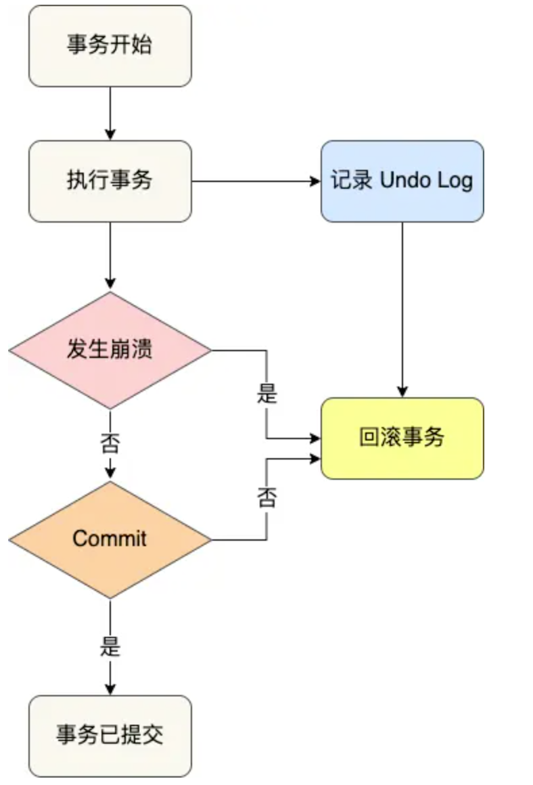
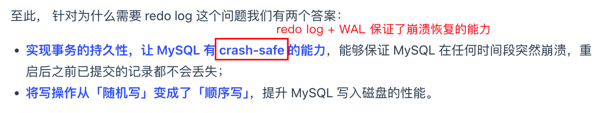
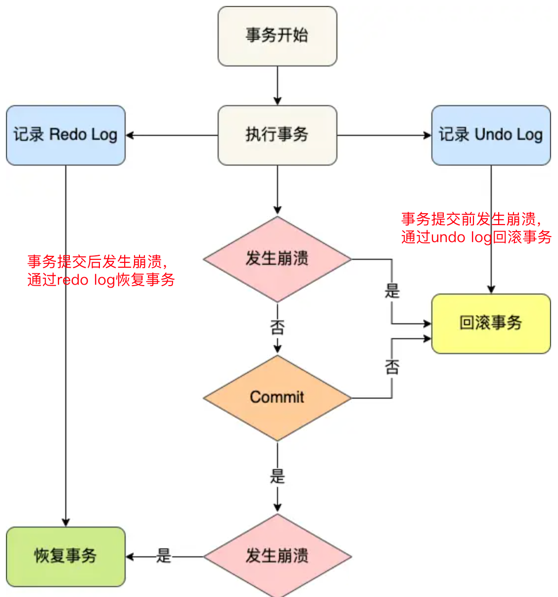

MIT6.5830-Lab6
MIT6.5830 的数据库课程。Lab6 主要是完成数据库的 STEAL / NO FORCE 策略，也就是基于 undo log 的日志回滚和基于 redo log 的崩溃恢复。

Undo log是什么
每当InnoDB引擎要对一条记录进行修改、删除、新增时，要把回滚时需要的信息都记录到undo log里，比如：
在插入一条记录时，要把这条记录的主键记录下来，方便回滚时根据主键将对应的记录删除；
在删除一条记录时，要把这条记录的所有内容都记录下来，方便回滚时把这些内容组成的记录插入回去；
在更新一条记录时，要把更新列的旧值记录下来，方便回滚时把该记录的旧值复原回去。

Redo log是什么
为什么要有Redo log：
首先明确一下MySQL在查询、更新中的流程：当BufferPool中没有对应的数据页时，首先将数据页从磁盘读取到BufferPool（内存）中，如果需要增删改操作，只需要修改BufferPool中的数据，并将BufferPool中的数据页设置为脏页，为了减少磁盘I/O，不会立刻将脏页写入磁盘，后续由后台线程选择一个合适时机将脏页写入磁盘。
BufferPool提高了读写效率，但是BufferPool是基于内存的，一旦断电重启，没来得及落盘的脏页数据就会丢失。
为了防止断电数据丢失的问题，每当更新一条数据时，InnoDB引擎就会更新内存+对这个页的修改以redo log的形式记录下来，这就算更新完成了。（我的理解：如果每次把脏页直接刷新到磁盘，就算在数据页中只涉及一条记录的更新也会被标记为脏页，这样大大增加了磁盘I/O的开销，所以通过redo log以简短方式记录下来，而且顺序写相比随机写更高效）
redo日志的格式：对表空间X的数据页Y的偏移Z做了A修改。
每当一个事务完成提交，会产生多条上述格式的redo log日志，只需要在事务提交时先将redo log持久化到磁盘中即可；当系统出现崩溃时，可以在MySQL重启后根据磁盘中的redo log日志内容将所有数据恢复到最新状态。
Ques：若是在redo log还没有持久化到磁盘中已经出现系统崩溃呢？

redo log和undo log区别
这两种都属于InnoDB存储引擎的日志，区别在于:
undo log 发生在事务执行过程中，记录了此次事务开始前的数据状态，记录的是更新之前的值。
redo log 发生在事务结束后，记录了此次事务完成后的数据状态，记录的是更新之后的值。

Exercise1
在Lab4中为了简化实现，数据库在 BufferPool 中实现的是 NO STEAL / FORCE 策略。在 Lab6 中要实现基于日志的中止回滚（undo log）和基于日志的崩溃恢复（redo log）。
现在 DBMS 常用的都是 STEAL / NO FORCE 策略，因此都需要记录 undo log 和 redo log。
BufferPool 是在内存上，由于断电等故障会造成数据丢失，因此需要回滚事务到提交前的状态需要 undo 日志，来实现 STEAL。对于已经提交的事务也不需要强制将数据立即刷入磁盘，而是通过记录的 redo 日志实现 NO FORCE。
对于日志的 NO FORCE 还有一个优点是将磁盘的随机写改为顺序写（将数据直接写入磁盘需要大量的随机 I/O，而实现 redo log 只需要追加一条日志改变为顺序 I/O）。
1 | public void rollback(TransactionId tid) |
Exercise2
日志中的 CHECKPOINT 会导致数据强制刷盘，而 CHECKPOINT 的触发条件也仅仅是周期性的定时检查，因此在 CHECKPOINT 阶段可能有未提交的事务也有已提交的事务，前者需要 undo 回滚，后者需要 redo 恢复。
处理未提交的事务利用 beforeImage 进行 undo 回滚
1
2
3
4
5
6
7
8
9for (long tid :beforeImgs.keySet()) {
if (!committed.contains(tid)) {
// 未提交的事务
List<Page> pages = beforeImgs.get(tid);
for (Page undo : pages) {
Database.getCatalog().getDatabaseFile(undo.getId().getTableId()).writePage(undo);
}
}
}处理已提交事务利用 afterImage 进行 redo 恢复
1
2
3
4
5
6
7
8
9for (long tid : committed) {
// 已提交的事务
if (afterImgs.containsKey(tid)) {
List<Page> pages = afterImgs.get(tid);
for (Page redo : pages) {
Database.getCatalog().getDatabaseFile(redo.getId().getTableId()).writePage(redo);
}
}
}
完整实现：
1 | public void recover() throws IOException { |